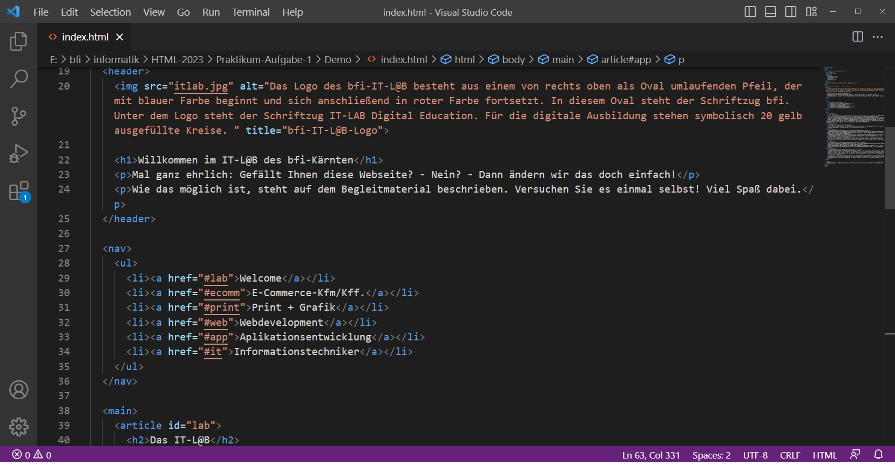
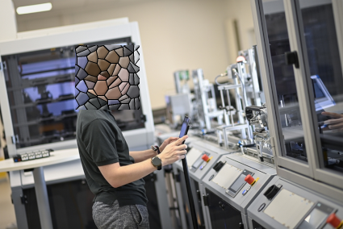

Das IT-L@B
In den IT-L@Bs betreuen Sie freundliche Trainerinnen und Trainer auf Ihrem Weg durch das triale Ausbildungsprogramm.
In der trialen Ausbildung besuchen Sie wie in jeder "gewöhnlichen" Berufsausbildung auch eine Berufsschule. Sie werden in Ihrem Ausbildungsunternehmen direkt fachlich unterwiesen und arbeiten nach einer kurzen Zeit bereits an eigenen Projekten. Zusätzlich absolvieren Sie Praktika in verschiedenen Partnerunternehmen des bfi.
Die Praktika ermöglichen es Ihnen, verschiedene Firmen, deren Arbeitsweisen und Kundenprofile kennenzulernen. Außerdem können Sie sich selbst für eine Übernahme in diesen Firmen empfehlen.
Lehrberuf: E-Commerce-Kauffrau/Kaufmann

Der E-Commerce.Kaufmann bzw. die E-Commerce-Kauffrau befasst sich mit dem gesamten Umfeld des Online-Handels. Zu den Aufgaben gehört die Einrichtung und Wartung von Online-Shops.
Die Arbeit im E-Commerce-Beruf bedeutet nicht unbedingt, Marktführern wie Amazon und Ebay direkte Konkurrenz zu machen. Vielmehr eröffnet das Know how von E-Commerce-Kaufleuten besonders kleinen und mittleren Einzelhändlern Chancen, über deren Kerngeschäft (stationäres Ladenlokal) hinaus neue Kunden in der Region zu gewinnen oder bestehende Kundenstämme mit zusätzlichen, attraktiven Einkaufsmöglichkeiten zu halten.
Gerade kleine und mittelständische Einzelhändler setzen nicht auf obere Listenplätze in den gängigen Suchmaschinen. Sie wollen regionale Bekanntheitsgrade erreichen. Der Zugang zum eigenen Webshop kann der Kundschaft beispielsweise mithilfe von QR-Codes erleichtert werden.
Medienfachfrau/-Fachmann Grafik, Print, Publishing audiovisuelle Medien
Der Medienfachmann bzw. die Medienfachfrau mit den Schwerpunkten Grafik, Print, Publishing und audiovisuelle Medien, einschließlich Video und Animation) entwickelt Layouts für diverse Medienprodukte. Diese werden beispielsweise in der Werbung nachgefragt.
Neben der Erstellung von Werbematerialien arbeiten Medienfachleute dieses Berufsbildes auch an der Gestaltung von Unternehmensauftritten mit. Das sichert den Wiedererkennungswert einer Marke und trägt somit zum geschäftlichen Erfolg eines Unternehmens bei.
Zu den interessantesten Herausforderungen gehören die Erstellung von Audio- und Videobeiträgen sowie 2D- und 3D-Animationen. Sie werden von Medienfachleuten geplant, organisiert, erstellt und letztlich finalisiert.
Medienfachfrau/-Fachmann Webdevelopment und audiovisuelle Medien
Der Medienfachmann bzw. die Medienfachfrau mit den Schwerpunkten Webdevelopment und audiovisuelle Medien entwickelt selbständig Websites nach den Anforderungen der Kunden.
Dies geschieht entweder von Grund auf in HTML, CSS, JavaScript und anderen Sprachen - so, wie Sie es hier gerade kennenlernen - oder auf der Grundlage eines Content Management Systems (CMS) wie z.B. WordPress.
Applikationsentwicklerin/Applikationsentwickler - Coding

Dieser Beruf war einst als "Programmierin/Programmierer" bzw. "IT-Informatiker/-Informatikerin" bekannt. Absolventen dieses Berufes arbeiten in der Software-Entwicklung. Potenzielle Arbeitgeber sind dabei nicht allein spezielle IT-Unternehmen, sondern auch Unternehmen, welche aufgrund ihrer Größe und ihres Aufgabengebietes eigene IT-Abteilungen unterhalten.
"Coder" bzw. "Coderinnen" entwickeln Software in verschiedenen Programmiersprachen wie beispielsweise C#, Python und PHP. Sie sind auch im Webdesign tätig, dessen Basis HTML und CSS sind. Mit Sprachen wie JavaScript und darauf aufbauenden Bibliotheken/Frameworks wie JQuery, React und Angular.js arbeiten dann die Profis.
Informationstechniker - System-/Betriebstechnik
"Informationstechnologen und Systemtechnologinnen mit Schwerpunkt Systemtechnik sind hauptsächlich in IT-Dienstleistungsunternehmen tätig. Sie versorgen ihre Kunden mit IT-Geräten wie Computer, Monitor, mobilen Geräten (Tablet, Laptop), etc. sowie der passenden Software und sorgen für deren reibungslose Funktion. Außerdem konzipieren und planen sie Netzwerke, Server-, Datenspeicher- und Backup-Systeme und erstellen Berechtigungskonzepte. Sie besorgen die nötige Hard- und Software und konfigurieren die Geräte für BenutzerInnen und Netzwerk. (Zitat: wko.at)

Informationstechnologinnen und Informationstechnologen mit dem Schwerpunkt Betriebstechnik arbeiten hauptsächlich in Betrieben mit computergesteuerten Produktionsmaschinen. Dort kümmern sie sich um alle Aspekte der IT-Infrastruktur, von Netzwerken und Umgebungen für Produktionsapplikationen (Software) bis zu den Endgeräten (Produktionsmaschinen). Sie konfigurieren die Geräte mit den entsprechenden Anwendungen (Software), planen und erstellen Netzwerke, Serversysteme, Cloud-Lösungen, Datenspeicher- und Back-up-Systeme und erstellen Berechtigungskonzepte. (Zitat: wko.at)